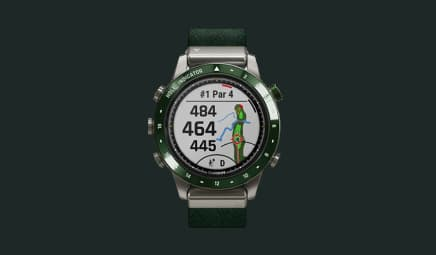

<section class="hero-section">
    <div class="container hero-container">
        <h1 class="hero-title">Welcome to our collection of premium watches</h1>
        <div class="hero-slider">
            <div class="swiper">
                <!-- Additional required wrapper -->
                <div class="swiper-wrapper">
                    <!-- Slides -->
                    <div class="swiper-slide">
                        <picture>
                            <source srcset="/img/hero/main-slider1.jpg 1x, /img/hero/main-slider1@2x.jpg 2x" media="(min-width: 768px)" width="436">
                            <source srcset="/img/hero/mobile-main-slider1.jpg 1x, /img/hero/mobile-main-slider1@2x.jpg 2x" media="(max-width: 767px)" width="266">
                            
                        </picture>
                    </div>
                    <div class="swiper-slide">
                        <picture>
                            <source srcset="/img/hero/main-slider2.jpg 1x, /img/hero/main-slider2@2x.jpg 2x" media="(min-width: 768px)" width="436">
                            <source srcset="/img/hero/mobile-main-slider2.jpg 1x, /img/hero/mobile-main-slider2@2x.jpg 2x" media="(max-width: 767px)" width="266">
                            
                        </picture>
                    </div>
                    <div class="swiper-slide">
                        <picture>
                            <source srcset="/img/hero/main-slider3.jpg 1x, /img/hero/main-slider3@2x.jpg 2x" media="(min-width: 768px)" width="436">
                            <source srcset="/img/hero/mobile-main-slider3.jpg 1x, /img/hero/mobile-main-slider3@2x.jpg 2x" media="(max-width: 767px)" width="266">
                            
                        </picture>
                    </div>
                    <div class="swiper-slide">
                        <picture>
                            <source srcset="/img/hero/main-slider4.jpg 1x, /img/hero/main-slider4@2x.jpg 2x" media="(min-width: 768px)" width="436">
                            <source srcset="/img/hero/mobile-main-slider4.jpg 1x, /img/hero/mobile-main-slider4@2x.jpg 2x" media="(max-width: 767px)" width="266">
                            
                        </picture>
                    </div>
                    <div class="swiper-slide">
                        <picture>
                            <source srcset="/img/hero/main-slider5.jpg 1x, /img/hero/main-slider5@2x.jpg 2x" media="(min-width: 768px)" width="436">
                            <source srcset="/img/hero/mobile-main-slider5.jpg 1x, /img/hero/mobile-main-slider5@2x.jpg 2x" media="(max-width: 767px)" width="266">
                            
                        </picture>
                    </div>
                </div>
                <div class="swiper-pagination"></div>
                <div class="swiper-button-prev"></div>
                <div class="swiper-button-next"></div>
            </div>
        </div>
        <p class="hero-text">Our watches are not just timepieces, but also an expression of your personality and lifestyle. From classic designs to modern ones, we have a watch to suit every taste and occasion.</p>
        <div class="hero-photo-box">
            <picture>
                <source srcset="/img/hero/main-photo-d.jpg 1x, /img/hero/main-photo-d@2x.jpg 2x" media="(min-width: 1280px)" width="676">
                <source srcset="/img/hero/main-photo-t.jpg 1x, /img/hero/main-photo-t@2x.jpg 2x" media="(min-width: 768px)" width="704">
                <source srcset="/img/hero/main-photo-m.jpg 1x, /img/hero/main-photo-m@2x.jpg 2x" media="(max-width: 767px)" width="335">
                
            </picture>
        </div>
    </div>
</section>